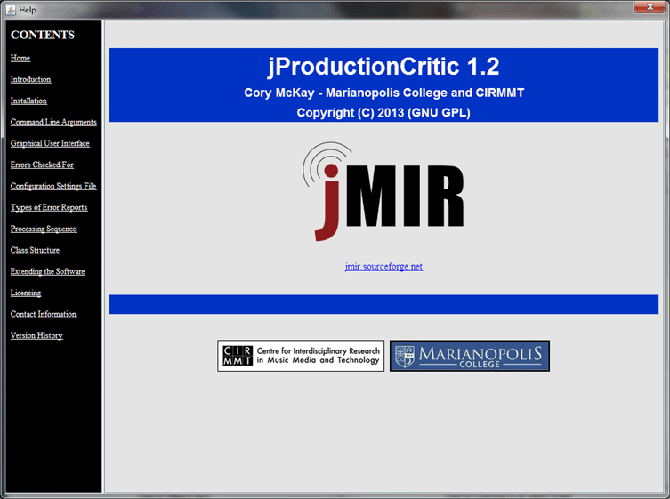
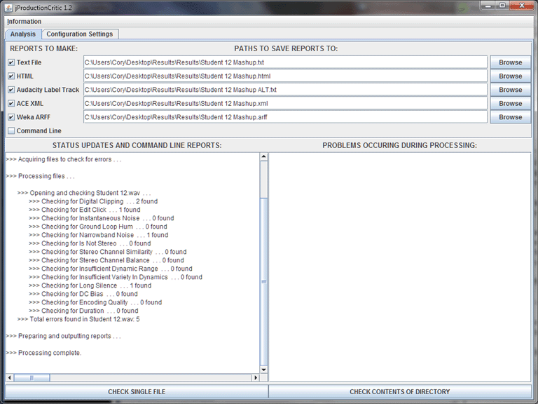
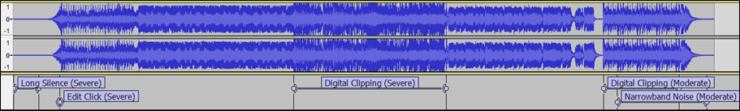
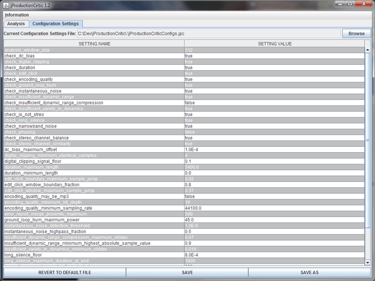

| Graphical User Interface |
|---|
EXPLANATION OF THIS SECTION
This section of the manual explains how to use the jProductionCritic GUI.
RUNNING JPRODUTIONCRITIC'S GUI
A file named "jProductionCritic.jar" is produced upon installation. As noted in the section of the manual on jProductionCritic's command line arguments, the GUI can be run by double clicking on this JAR or, better yet, by typing the following at the command line in the directory of the JAR:
java -mx1000M -jar jProductionCritic.jar
This second option is preferable, as it helps to avoid problems associated with Java running out of memory (which can result in the JRE suddenly quitting).
OVERVIEW OF JPRODUTIONCRITIC'S GUI
The jProductionCritic GUI consists of two primary panes: a Configuration Settings Pane for selecting configuration settings governing which production errors are checked for and using what thresholds, and an Analysis Pane for controlling the reports that are generated, displaying the results of processing and initiating processing. There are also two menu commands that can be accessed by the user:
It should be noted that the GUI is simply a front end for jProductionCritic, which in essence simply allows users to enter settings which are then formulated by the GUI as command line arguments, and sent to the backend to be run as if only command line arguments were used. The processing sequence is therefore identical to that executed when using the command line interface. The only functionality that can be performed with the GUI that cannot be performed via command line arguments is the editing of the configuration settings, and this is easy enough to do with a text editor for those who prefer to bypass the GUI and use jProductionCritic directly with its command line argument interface.

Figure 1: A screenshot of the on-line manual.
THE ANALYSIS PANE
The Analysis Pane (Figure 2) is used for controlling the reports that are generated when audio files are analyzed for technical production errors. It initiates processing and displays the results.
The top section of the Analysis Pane allows the user to select the error reports that are to be generated, and where to save them. The checkbox for a type of report must be selected before its save path can be specified. Report paths can be entered directly in the text fields, or via a browse file chooser dialog box. Note that, as explained in the error reports section, sometimes it is appropriate to specify single files and sometimes it is appropriate to specify directories in the report paths, depending on the type of report to be generated and on whether a single selected file is to checked or the contents of a directory (i.e. which button at the bottom of the pane is pressed). In particular, note that automatically generated Audacity label track file names are given the .txt extension, which could cause them to overwrite .txt report files set to be generated in the same directory, so it is wise to save text file reports and Audacity label track reports in separate directories or with different names. An example of an Audacity Labels Track report viewed next to the waveform from which it was generated as seen in Audacity is displayed in Figure 3.
The middle section of the Analysis Pane has two parts: the Status Updates and Command Line Reports area on the left, and the Problems Occurring During Processing area on the right. The Status Updates and Command Line Reports area displays processing status reports output by jProductionCritic as files are being checked for errors. It also displays Command Line Reports if the checkbox for this report type is checked above. The Problems Occurring During Processing area indicates details of any problems that may occur during processing (e.g. invalid files chosen for analysis, inappropriate configuration settings chosen by the user, etc.).
Finally, the buttons on the bottom of the screen allow the user to initiate error checking of audio files for production errors. The Check Single File button brings up a dialog box allowing the user to select a single file for error checking, and the Check Contents of Directory button brings up a dialog box allowing the user to select a directory whose contents will be checked for production errors (the contents of sub-directories are not examined).

Figure 2: A screenshot of the Analysis Pane after checking a file for production errors.

Figure 3: An Audacity Labels Track report viewed next to the waveform from which it was generated, as seen in Audacity.
THE CONFIGURATION SETTINGS PANE
The Configuration Settings Pane (Figure 4) is used for selecting configuration settings governing which production errors are checked for and using what thresholds. It allows users to parse settings from configuration settings files, edit these settings and save the settings to configuration settings files.
The top area of this pane allows the user to select the path of the configuration settings file to base settings on. The configuration settings file at the default path is loaded at startup. The path can not be entered directly in the text field, and must be selected by browsing via the file chooser dialog box.
The middle are of this pane shows the configuration settings that have been parsed from the selected file. The title of each configuration setting is indicated on the left, and its value on the right. The values of the configuration settings can be edited by double clicking on them, although their titles may not be edited.
The Revert to Default File button at the bottom of the pane causes the configuration settings file at the default location to be loaded. If the file there is invalid, it is regenerated with default values. The Save and Save As buttons allow the user to save the settings in the middle of the screen to the file path referred to at the top of the screen.
It is important to note that processing is done using the saved configuration settings file referred to at the top of this pane. Any changes made by the user to the setting values will only be incorporated into processing if saved, which happens via the Save and Save As buttons on this pane. Any changes entered to the table by the user are also automatically saved to the path referred to at the top of this pane if the Check Single File button or the Check Contents of Directory button is pressed in the Analysis Panel.
Extensive error checking is performed by jProductionCritic on all loaded and edited configuration settings values. Such error checking is done whenever a configuration settings file is loaded or saved. The user is alerted when this happens. In the case of invalid setting values, a dialog box is presented to the user instructing the user to correct the invalid settings. In the case of invalid configuration settings files being loaded, settings are automatically returned to default values. Note that when incomplete configuration settings files are opened, they are assigned default values for the settings that they are missing.
Note that if the user wishes to return all settings to defaults but has made changes to the default configuration settings file, a new file can simply be auto-generated by deleting the configuration settings file at the default location and rerunning jProductionCritic.

Figure 4: A screenshot of the Configuration Settings Pane.